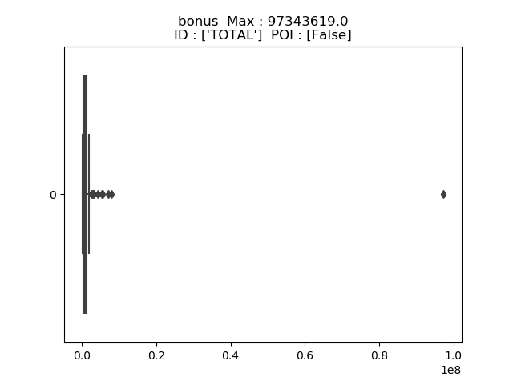
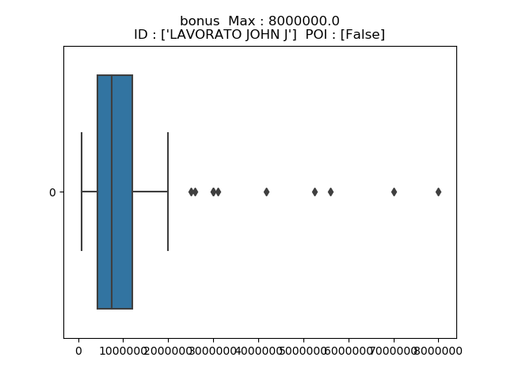
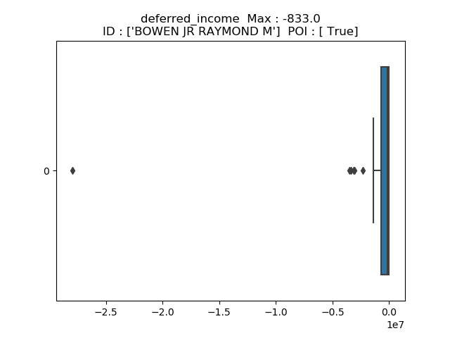
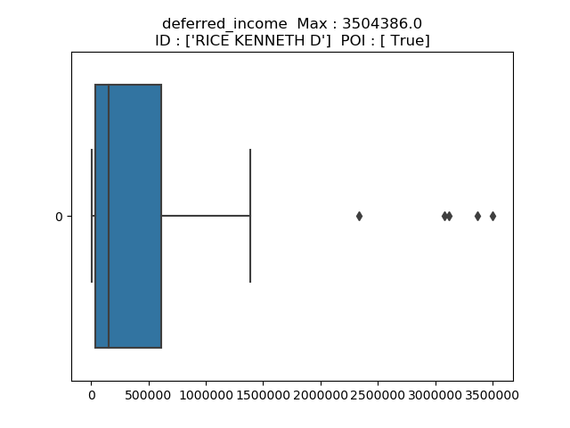
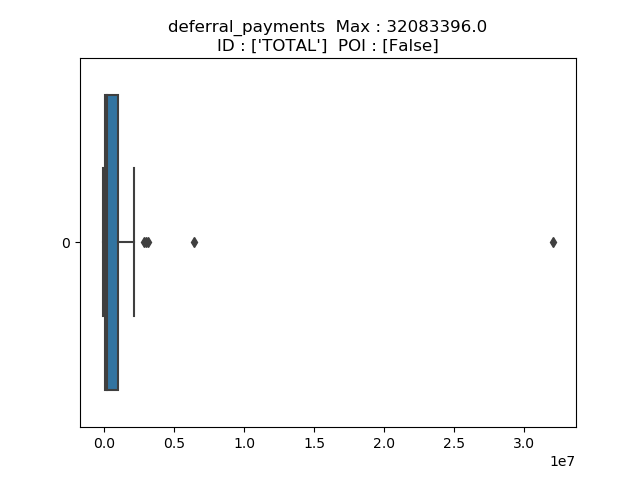
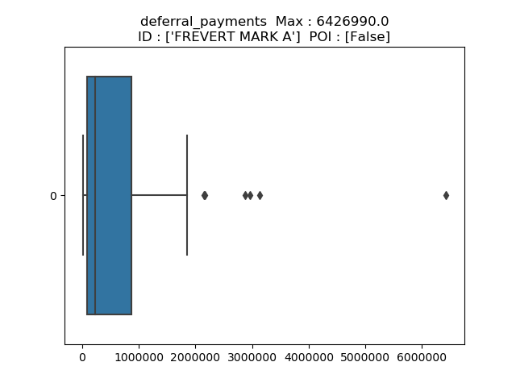
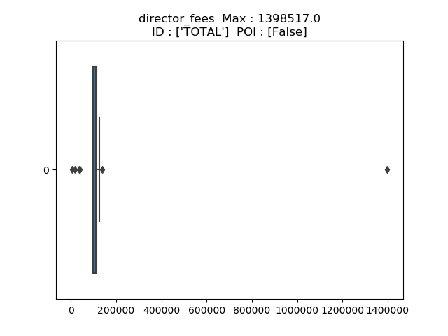
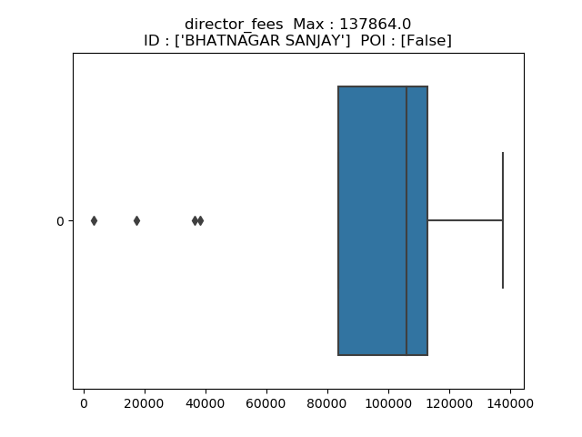
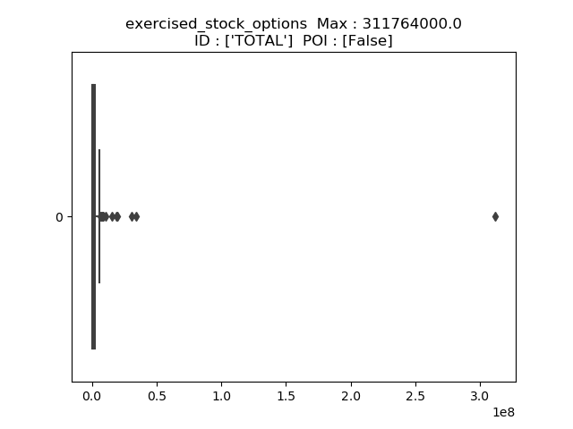

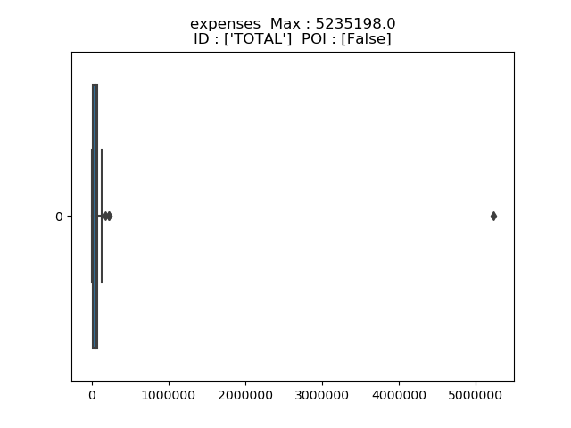
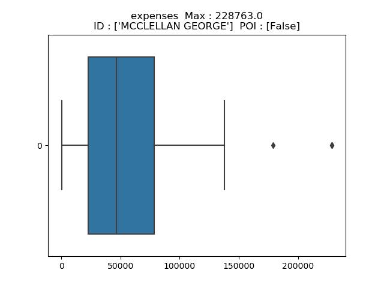
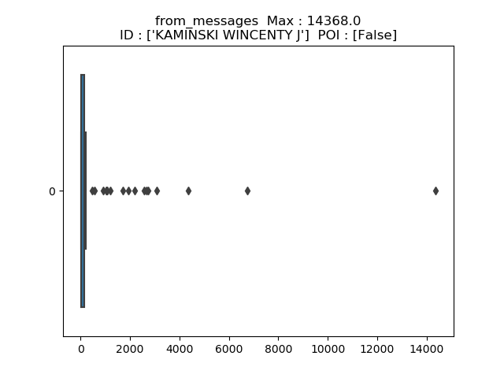
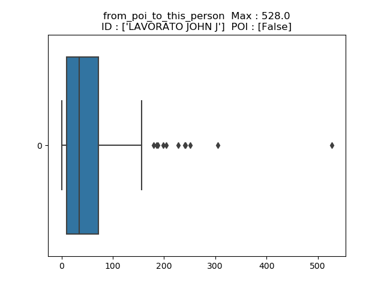
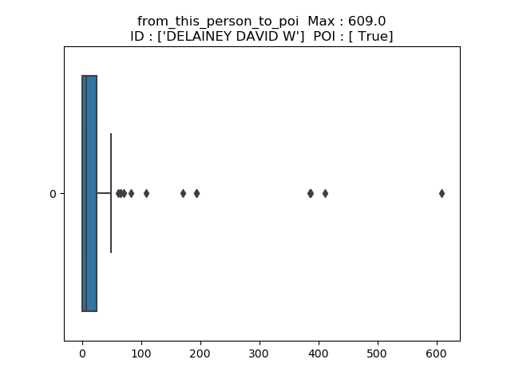
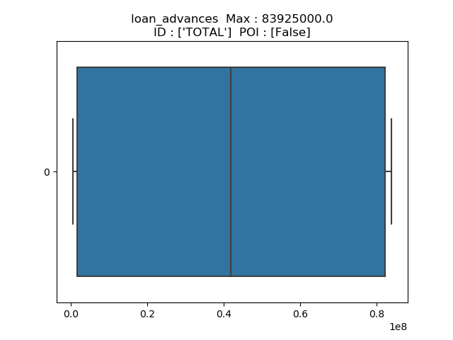
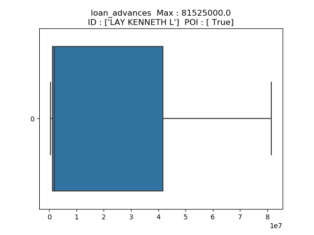
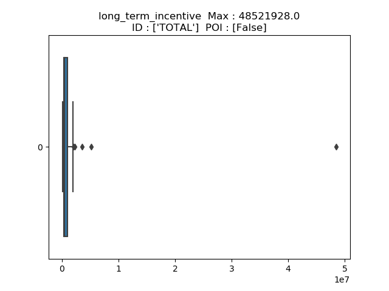
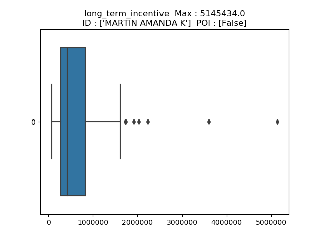
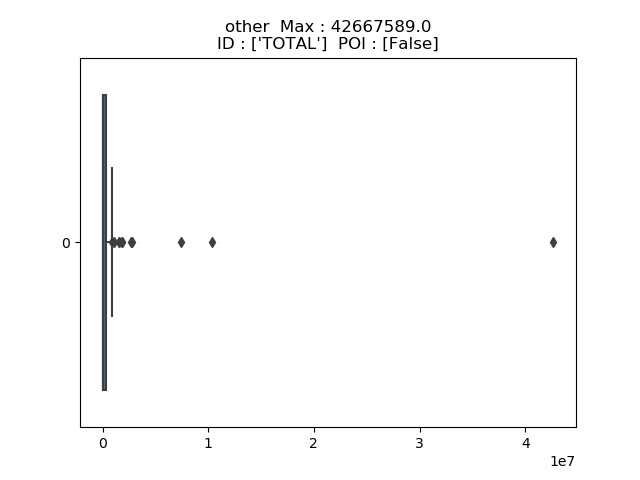
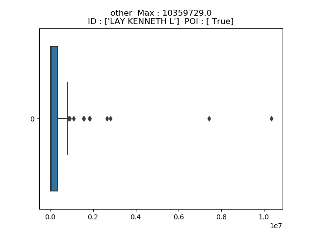
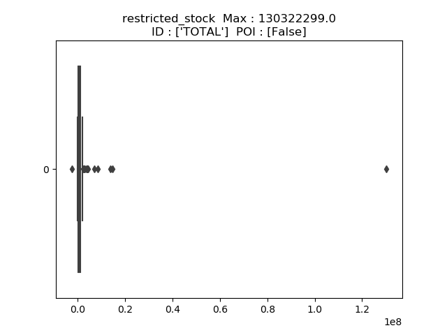
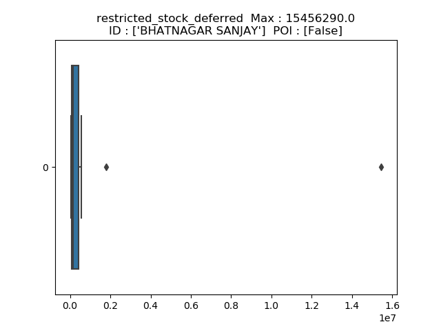
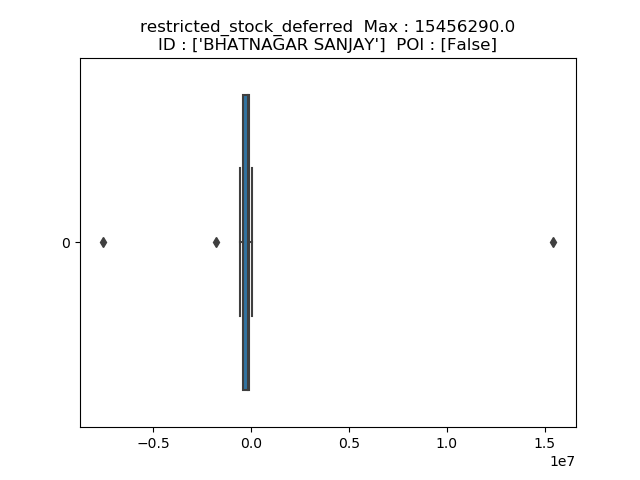
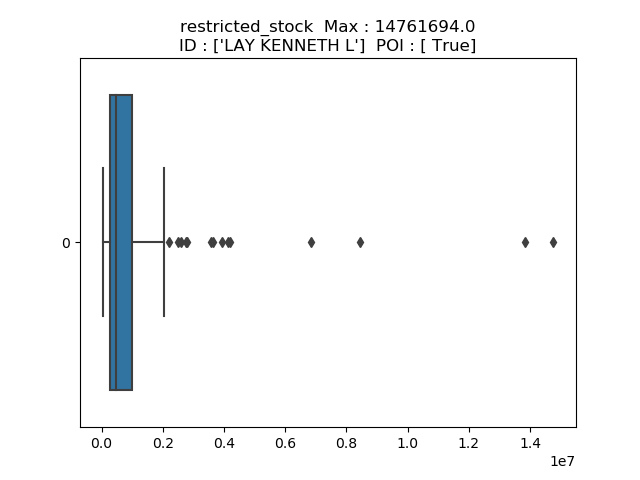
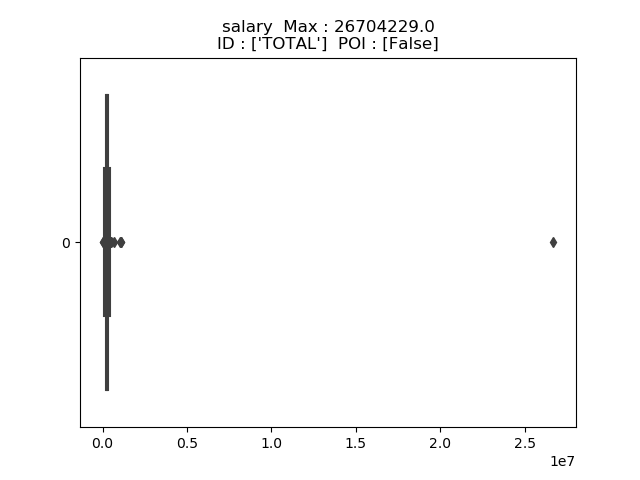
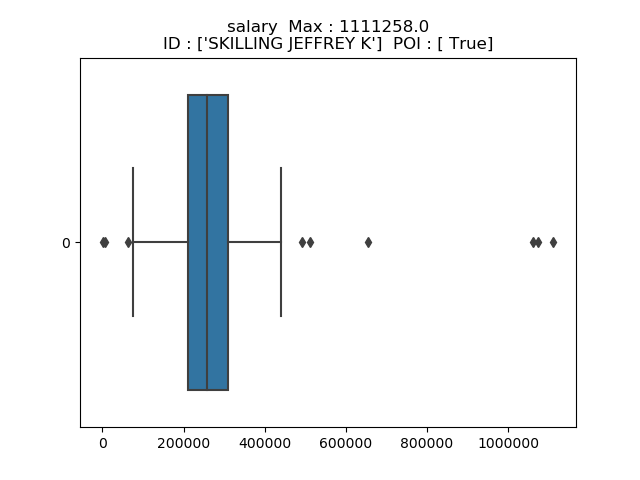
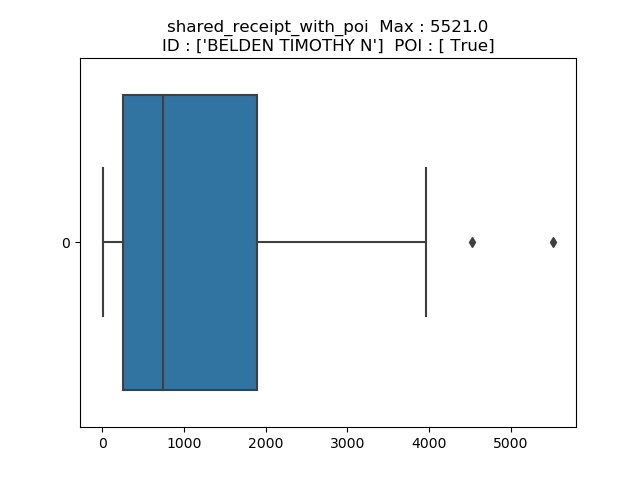
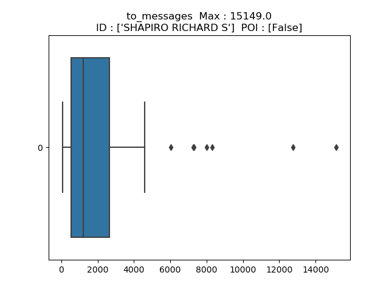
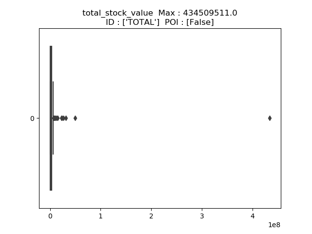
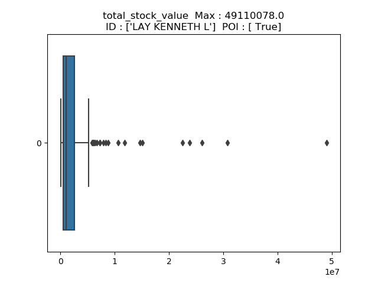
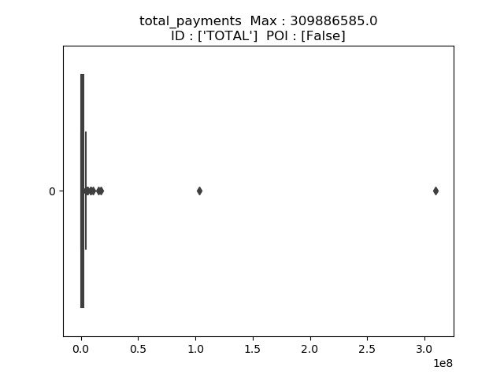
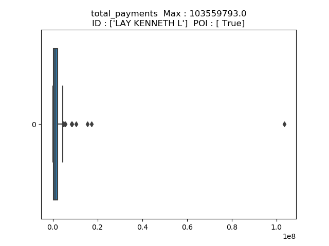
Ludovic Tramutola
First submission : 26/02/2021
What’s new :
A critical part of machine learning is making sense of your analysis process and communicating it to others. The questions below will help us understand your decision-making process and allow us to give feedback on your project. Please answer each question; your answers should be about 1-2 paragraphs per question. If you find yourself writing much more than that, take a step back and see if you can simplify your response!
Summarize for us the goal of this project and how machine learning is useful in trying to accomplish it. As part of your answer, give some background on the dataset and how it can be used to answer the project question.
The goal of this project is to determine who are the person of interest in the Enron Fraud case based on the provided data : financial and email.
In 2000, Enron was one of the top company in the united states but in 2002, due to a fraud, the company bankrupted.
Today, we have the data, including the results of the investigation, to use machine learning in order to detect who can be related to the fraud.
I’ll try to follow my analysis. Beginning in python, I know I can optimise the code, create functions instead of copy/paste. But when I get something working I prefer not to touch it.
Data Exploration (related lesson: "Datasets and Questions")
Student response addresses the most important characteristics of the dataset and uses these characteristics to inform their analysis. Important characteristics include:
total number of data points
allocation across classes (POI/non-POI)
number of features used
are there features with many missing values? etc.
At this stage, I get some of the characteristics of the dataset we have.
Total People number : 146
Number of features : 21
features names:
['salary',
'to_messages',
'deferral_payments',
'total_payments',
'exercised_stock_options',
'bonus',
'restricted_stock',
'shared_receipt_with_poi',
'restricted_stock_deferred',
'total_stock_value',
'expenses',
'loan_advances',
'from_messages',
'other',
'from_this_person_to_poi',
'poi',
'director_fees',
'deferred_income',
'long_term_incentive',
'email_address',
'from_poi_to_this_person']
POIs list :
----
HANNON KEVIN P
COLWELL WESLEY
RIEKER PAULA H
KOPPER MICHAEL J
SHELBY REX
DELAINEY DAVID W
LAY KENNETH L
BOWEN JR RAYMOND M
BELDEN TIMOTHY N
FASTOW ANDREW S
CALGER CHRISTOPHER F
RICE KENNETH D
SKILLING JEFFREY K
YEAGER F SCOTT
HIRKO JOSEPH
KOENIG MARK E
CAUSEY RICHARD A
GLISAN JR BEN F
----
Total POIs : 18
----------
Here are the management of the NaN and Zero data in the dataset :
At first, it seemed there was no NaN but in reality it was not a real NaN.
So I had to convert it, especially when I tried to use dataframe conversion and plotting.
(Also, I discovered later, I needed to convert negative values into absolute ones.)
Value/Nan check :
---------------
---------------
NaN conversion : done
---------------
---------------
Value/Zero check :
---------------
Zero number for each feature:
from_poi_to_this_person : 12
from_this_person_to_poi : 20
poi : 128
---------------
Zero check : done
---------------
Concerning the zero value, it makes sense for these three features :
Outlier Investigation (related lesson: "Outliers")
Student response identifies outlier(s) in the financial data, and explains how they are removed or otherwise handled.
As part of the training, we got a lesson about outliers management dedicated to Enron database.
As in the lesson outlier detection :
We clearly see an outlier when checking Bonus vs Salary relationship | SPOIL : after analysis and outlier removal, we see a more consistent pack of data |
For sure it works, but it does not come from me, it was part of the lessons.
Also I tried several relationship between several data, to me it was too much about luck than a real analysis, so I tried another one.
I tried to apply the InterQuartileRange IQR analysis manually :
Beginning in python, it is always several hours step by step to compile data into one table.
So, before going further into the kind of work, I took two features and check what I got with the IQR calculation.
---------------
IQR salary
---------------
salary to_messages deferral_payments total_payments exercised_stock_options
TOTAL 26704229.0 NaN 32083396.0 309886585.0
SKILLING JEFFREY K 1111258.0 3627.0 NaN 8682716.0
LAY KENNETH L 1072321.0 4273.0 202911.0 103559793.0
FREVERT MARK A 1060932.0 3275.0 6426990.0 17252530.0
PICKERING MARK R 655037.0 898.0 NaN 1386690.0
WHALLEY LAWRENCE G 510364.0 6019.0 NaN 4677574.0
DERRICK JR. JAMES V 492375.0 2181.0 NaN 550981.0
FASTOW ANDREW S 440698.0 NaN NaN 2424083.0
SHERRIFF JOHN R 428780.0 3187.0 NaN 4335388.0
RICE KENNETH D 420636.0 905.0 NaN 505050.0
[10 rows x 21 columns]
(95, 21)
---------------
---------------
IQR to_messages
---------------
salary to_messages deferral_payments total_payments exercised_stock_options
SHAPIRO RICHARD S 269076.0 15149.0 NaN 1057548.0
KEAN STEVEN J 404338.0 12754.0 NaN 1747522.0
KITCHEN LOUISE 271442.0 8305.0 NaN 3471141.0
BELDEN TIMOTHY N 213999.0 7991.0 2144013.0 5501630.0
BECK SALLY W 231330.0 7315.0 NaN 969068.0
LAVORATO JOHN J 339288.0 7259.0 NaN 10425757.0
WHALLEY LAWRENCE G 510364.0 6019.0 NaN 4677574.0
KAMINSKI WINCENTY J 275101.0 4607.0 NaN 1086821.0
LAY KENNETH L 1072321.0 4273.0 202911.0 103559793.0
HAEDICKE MARK E 374125.0 4009.0 2157527.0 3859065.0
[10 rows x 21 columns]
(86, 21)
For sure, I can exploit them but I understood this method should be an automatic one used in huge dataset.
So I tried another method to detect the outliers.
Visual boxplot(IQR) method :
Looking for outliers management into google, I saw the visual IQR boxplot method !
This one seemed really interesting and full of sense to me.
During my first try, I noticed, I should check who is the max outlier.
So I put the ID of the person who’s outlying most.
As I saw the boxplot, I decided to not analyse the lower outliers, to me it was not relevant.
I decided to managed the outliers detecting who’s the most outlying, analysing it, dropping it if necessary and checking again.
Analysing the outlier highlighted by the boxplot is depending of :
Here is the result before and after :
In the end of this outliers analysis, I dropped :
‘TOTAL’ which is the total of the columns of the different features.
And I also saw during the check of the boxplot 'THE TRAVEL AGENCY IN THE PARK' which is not a person although linked to a person.
I was thinking, the more relevant data we have, the best performance in term of quality we’ll have to classify them. If I understood well, we check for error visualizing disparity of the data.
What features did you end up using in your POI identifier, and what selection process did you use to pick them? Did you have to do any scaling? Why or why not? As part of the assignment, you should attempt to engineer your own feature that does not come ready-made in the dataset -- explain what feature you tried to make, and the rationale behind it. (You do not necessarily have to use it in the final analysis, only engineer and test it.) In your feature selection step, if you used an algorithm like a decision tree, please also give the feature importances of the features that you use, and if you used an automated feature selection function like SelectKBest, please report the feature scores and reasons for your choice of parameter values. [relevant rubric items: “create new features”, “intelligently select features”, “properly scale features”]
The first thing concerning the features was to identify which data may be in relation with the fraud.
So, it is not about computer science but really about real life.
The scope of the data we have is financial and some relation between people with their mail.
As the goal of a fraud is about money, I suppose money data is pretty important.
In a company, the most used communication channel is the email.
So, I added 5 features calculated by already known features :
In the order of relevance in my mind :
['ratio_to_poi'] = Percentage of mail sent to POI
['ratio_from_poi'] = Percentage of mail received from POI
['total_mail'] = total mail of a person
['total_mail_poi'] = Number of mail related to POI (sent and received)
['total_ratio_mail_poi'] = percentage of mail related to POI (sent and received)
I did not feel any need of scaling at this step.
Then, I decided to use scikit-learn Univariate feature selection “selectKBest”.
My goal was to confront my vision to the computer vision, I found a code on google, displaying the result in a table :
Warning : Spoil : these results are bad !
feature | score |
total_mail | 25.097542 |
bonus | 24.464726 |
director_fees | 21.060002 |
restricted_stock | 18.575703 |
from_poi_to_this_person | 16.641707 |
expenses | 11.595548 |
deferred_income | 10.072455 |
from_this_person_to_poi | 8.961784 |
salary | 8.866722 |
restricted_stock_deferred | 8.746486 |
shared_receipt_with_poi | 7.242730 |
deferral_payments | 6.234201 |
ratio_from_poi | 5.518506 |
total_stock_value | 5.344942 |
exercised_stock_options | 4.955198 |
from_messages | 4.204971 |
total_mail_poi | 3.210762 |
ratio_to_poi | 2.426508 |
other | 2.107656 |
poi | 1.698824 |
total_payments | 0.515192 |
long_term_incentive | 0.245090 |
to_messages | 0.225355 |
loan_advances | 0.164164 |
After these first results, I tried the the classifiers as is to check how they perform :
KNeighborsClassifier(algorithm='auto', leaf_size=30, metric='minkowski',metric_params=None, n_jobs=1, n_neighbors=5, p=2,weights='uniform')
Precision: 0.04852
Recall: 0.01150
GaussianNB(priors=None)
Precision: 0.17341
Recall: 0.95100
The results were so bad, we wanted a precision and recall of 0.3 minimum.
I tried to select the features manually : selecting only a few and it worked, so I checked my selectKbest code and saw I should have removed POI from the display list, the label shifted…
With a better code, I used selectKbest again and got these good results :
in bold, the features I kept.
features | score |
exercised_stock_options | 24.815080 |
total_stock_value | 24.179972 |
bonus | 20.792252 |
salary | 18.289684 |
ratio_to_poi | 16.409713 |
deferred_income | 11.458477 |
long_term_incentive | 9.922186 |
restricted_stock | 8.828679 |
total_payments | 8.772778 |
shared_receipt_with_poi | 8.589421 |
loan_advances | 7.184056 |
expenses | 6.094173 |
total_ratio_mail_poi | 5.399370 |
from_poi_to_this_person | 5.243450 |
total_mail_poi | 4.863682 |
other | 4.187478 |
ratio_from_poi | 3.128092 |
from_this_person_to_poi | 2.382612 |
director_fees | 2.126328 |
to_messages | 1.646341 |
total_mail | 0.490666 |
restricted_stock_deferred | 0.247053 |
deferral_payments | 0.233091 |
from_messages | 0.169701 |
Time to check how well these new parameters performed :
GaussianNB(priors=None)
Precision: 0.32480
Recall: 0.31100
KNeighborsClassifier(algorithm='auto', leaf_size=30, metric='minkowski', metric_params=None, n_jobs=1, n_neighbors=5, p=2, weights='uniform')
Precision: 0.63878
Recall: 0.16800
I already reach the wanted results with Naive Bayes algorithm with my features selection :
My features list will be :
['poi',
'exercised_stock_options',
'total_stock_value',
'bonus',
'salary',
'ratio_to_poi',
'deferred_income',
'long_term_incentive',
'restricted_stock',
'total_payments',
'shared_receipt_with_poi',
'loan_advances',
'expenses',
'total_ratio_mail_poi',
'from_poi_to_this_person']
end of features list
What algorithm did you end up using? What other one(s) did you try? How did model performance differ between algorithms? [relevant rubric item: “pick an algorithm”]
What does it mean to tune the parameters of an algorithm, and what can happen if you don’t do this well? How did you tune the parameters of your particular algorithm? What parameters did you tune? (Some algorithms do not have parameters that you need to tune -- if this is the case for the one you picked, identify and briefly explain how you would have done it for the model that was not your final choice or a different model that does utilize parameter tuning, e.g. a decision tree classifier). [relevant rubric items: “discuss parameter tuning”, “tune the algorithm”]
At first I used these 2 algorithms as they are the ones I understood really well during the lessons, also, Naive Bayes doesn’t require any hyper-parameters.
The first thing I can say is : the feature selection is part of the parameters.
Although I got the desired score, I decided to check more algorithms and also I’ll train myself to use scikit learn.
My second step was to launch with default hyper-parameters the following algorithms using the test_classifier() function provided :
GaussianNB(priors=None)
Accuracy: 0.82193 Precision: 0.32480 Recall: 0.31100 F1: 0.31775 F2: 0.31367
Total predictions: 15000 True positives: 622 False positives: 1293 False negatives: 1378 True negatives: 11707
KNeighborsClassifier(algorithm='auto', leaf_size=30, metric='minkowski', metric_params=None, n_jobs=1, n_neighbors=5, p=2, weights='uniform')
Accuracy: 0.87640 Precision: 0.63878 Recall: 0.16800 F1: 0.26603 F2: 0.19704
Total predictions: 15000 True positives: 336 False positives: 190 False negatives: 1664 True negatives: 12810
LinearSVC(C=1.0, class_weight=None, dual=True, fit_intercept=True,
intercept_scaling=1, loss='squared_hinge', max_iter=1000,
multi_class='ovr', penalty='l2', random_state=None, tol=0.0001,
verbose=0)
Accuracy: 0.68300 Precision: 0.13335 Recall: 0.25050 F1: 0.17405 F2: 0.21306
Total predictions: 15000 True positives: 501 False positives: 3256 False negatives: 1499 True negatives: 9744
LinearSVC(C=1.0, class_weight=None, dual=True, fit_intercept=True,
intercept_scaling=1, loss='hinge', max_iter=1000, multi_class='ovr',
penalty='l2', random_state=None, tol=0.0001, verbose=0)
Accuracy: 0.69147 Precision: 0.13090 Recall: 0.23300 F1: 0.16763 F2: 0.20156
Total predictions: 15000 True positives: 466 False positives: 3094 False negatives: 1534 True negatives: 9906
LinearSVC(C=1.0, class_weight=None, dual=True, fit_intercept=True,intercept_scaling=1, loss='squared_hinge', max_iter=1000, multi_class='ovr', penalty='l2', random_state=None, tol=0.0001, verbose=0)
Accuracy: 0.69073 Precision: 0.13070 Recall: 0.23350 F1: 0.16759 F2: 0.20176
Total predictions: 15000 True positives: 467 False positives: 3106 False negatives: 1533 True negatives: 9894
DecisionTreeClassifier(class_weight=None, criterion='gini', max_depth=None, max_features=None, max_leaf_nodes=None, min_impurity_decrease=0.0, min_impurity_split=None, min_samples_leaf=1, min_samples_split=2, min_weight_fraction_leaf=0.0, presort=False, random_state=None, splitter='best')
Accuracy: 0.81380 Precision: 0.29509 Recall: 0.28550 F1: 0.29022 F2: 0.28737
Total predictions: 15000 True positives: 571 False positives: 1364 False negatives: 1429 True negatives: 11636
AdaBoostClassifier(algorithm='SAMME.R', base_estimator=None, learning_rate=1.0, n_estimators=50, random_state=None)
Accuracy: 0.83247 Precision: 0.34293 Recall: 0.28000 F1: 0.30829 F2: 0.29067
Total predictions: 15000 True positives: 560 False positives: 1073 False negatives: 1440 True negatives: 11927
As previously, Naive Bayes performed well.
I decided to go more in depth and tried to use GridSearchCV on DecisionTreeClassifier
I use a parameters table mixing :
It ended the best parameters were :
DecisionTreeClassifier(class_weight=None, criterion='entropy', max_depth=None,
max_features='auto', max_leaf_nodes=None,
min_impurity_decrease=0.0, min_impurity_split=None,
min_samples_leaf=1, min_samples_split=2,
min_weight_fraction_leaf=0.0, presort=False, random_state=None,
splitter='best')
Accuracy: 0.83553 Precision: 0.37107 Recall: 0.33600 F1: 0.35266 F2: 0.34247
Total predictions: 15000 True positives: 672 False positives: 1139 False negatives: 1328 True negatives: 11861 0.561000108719 secs
These results are slightly better than Naive Bayes. I am sure if I spend more time and testing with different features, we can reach a better score.
What is validation, and what’s a classic mistake you can make if you do it wrong? How did you validate your analysis? [relevant rubric items: “discuss validation”, “validation strategy”]
Validation is the method you use to determine if the algorithm is well performing or not.
The classic mistake is to use the same data to train the algorithm and to test it.
In this case, we talk about overfitting.
In sci-kit learn, there are several validation tools.
As the provided code kindly includes the test_classifier() function using stratified shuffle split cross validation method, I did not use another one and stick with it.
Give at least 2 evaluation metrics and your average performance for each of them. Explain an interpretation of your metrics that says something human-understandable about your algorithm’s performance. [relevant rubric item: “usage of evaluation metrics”]
As the performance requested were :
I’ll talk about these two.
About my performance :
Precision | recall | |
GaussianNB | 0,3248 | 0,311 |
KNeighborsClassifier | 0,63878 | 0,168 |
LinearSVC(squared_hinge) | 0,13335 | 0,2505 |
LinearSVC(hinge) | 0,1309 | 0,233 |
LinearSVC | 0,1307 | 0,2335 |
DecisionTreeClassifier | 0,29509 | 0,2855 |
AdaBoostClassifier | 0,34293 | 0,28 |
average | 0,29 | 0,25 |
maximum | 0,64 | 0,31 |
About their meaning :
Precision is the algorithm performance to classify correctly.
In our case, the precision is the real POI detected divided by the right or wrong POI detected by the algorithm.
How many POI detected are true POI.
Recall is the algorithm capacity to detect correct data.
In our case, the recall is the number of real POI detected divided by the real number of POI.
Here is the algorithm I choose : simple and working
GaussianNB(priors=None)
Accuracy: 0.82193 Precision: 0.32480 Recall: 0.31100 F1: 0.31775 F2: 0.31367
Total predictions: 15000 True positives: 622 False positives: 1293 False negatives: 1378 True negatives: 11707